Species of Thailand
The great hornbill (Buceros bicornis) also known as the concave-casqued hornbill, great Indian hornbill or great pied hornbill, is one of the larger members of the hornbill family. It is found in the Indian subcontinent and Southeast Asia. Its impressive size and colour have made it important in many tribal cultures and rituals. The great hornbill is long-lived, living for nearly 50 years in captivity. It is predominantly frugivorous, but is an opportunist and will prey on small mammals, reptiles and birds. Like other members of the hornbill family, they have highly pneumatized bones, with hollow air cavities extending to the tips of the wing bones. This anatomical feature was noted by Richard Owen, who dissected a specimen that died at the Zoological Society of London in 1833.
The species was formerly broken into subspecies cavatus, from the Western Ghats, and homrai, the nominate form from the sub-Himalayan forests. The subspecies from Sumatra was sometimes called cristatus. Variation across populations is mainly in size, Himalayan birds being larger than those from further south, and the species is now usually considered monotypic. Great hornbills are found in the forests of India, Bhutan, Nepal, Mainland Southeast Asia, Indonesian Island of Sumatra and North eastern region of India. The distribution of the species is fragmented over its range in the Indian subcontinent and Southeast Asia. In the subcontinent they are found in a few forest areas in the Western Ghats and in the forests along the Himalayas. Deforestation has reduced their range in many parts of India such as in the Kolli hills where they were recorded in the 1860s. Their distribution extends into Thailand, Burma, Malaya, and Sumatra. A small feral population is found in Singapore. Their habitat is dense old growth (unlogged) forests in hilly regions. They appear to be dependent on large stretches of forest, unlike many of the smaller hornbills.
HORNBILL INFO

 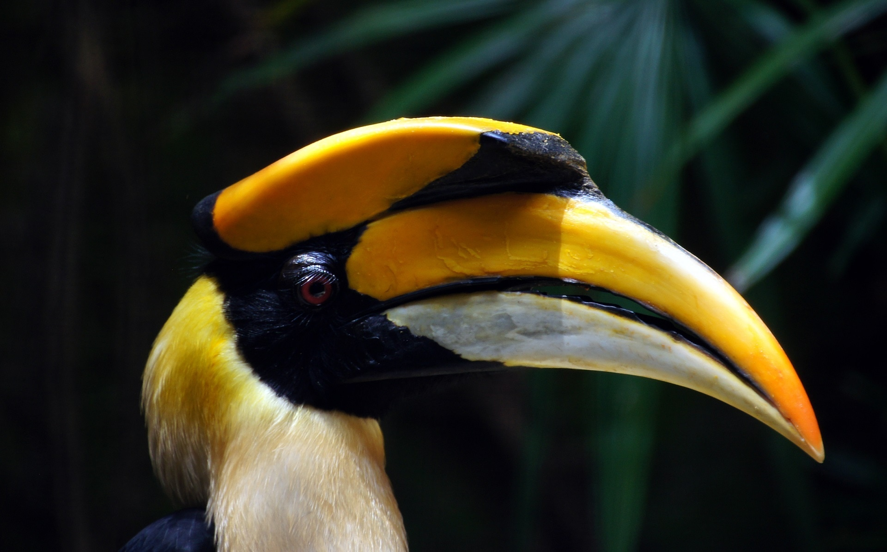
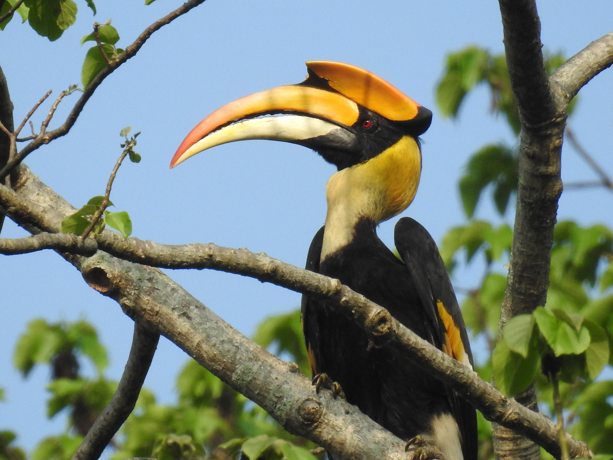
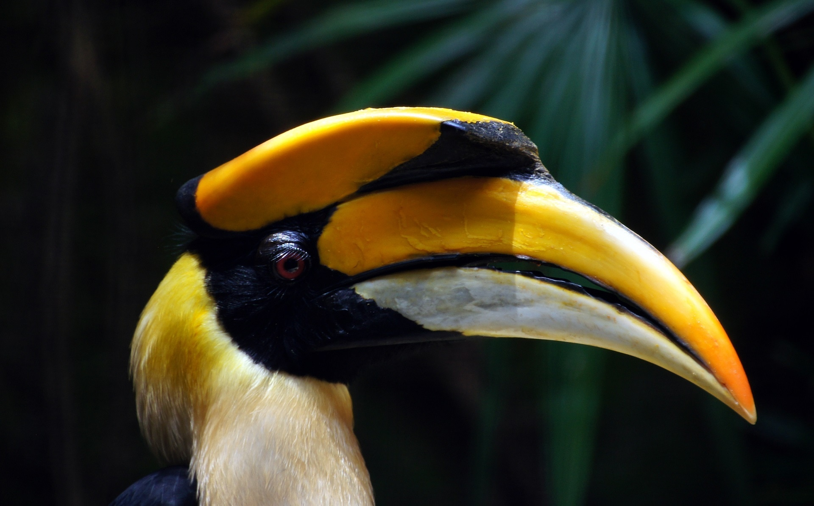
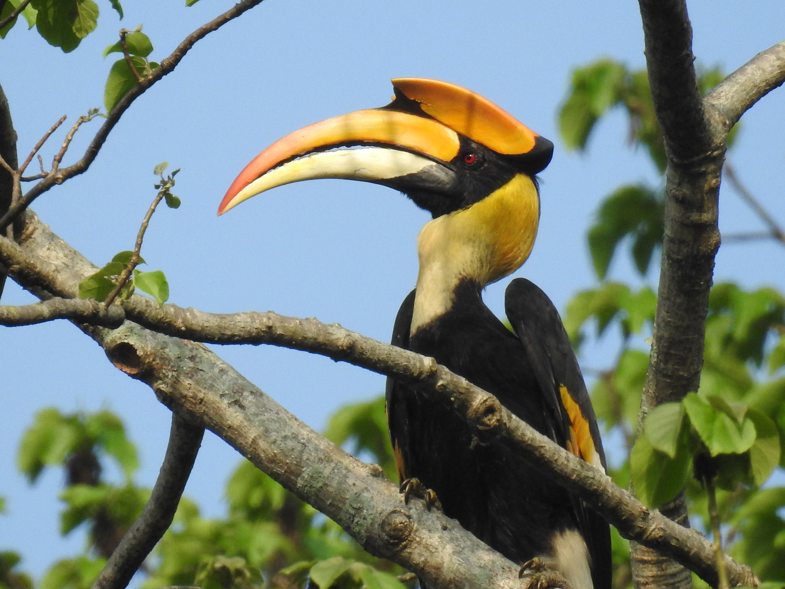
 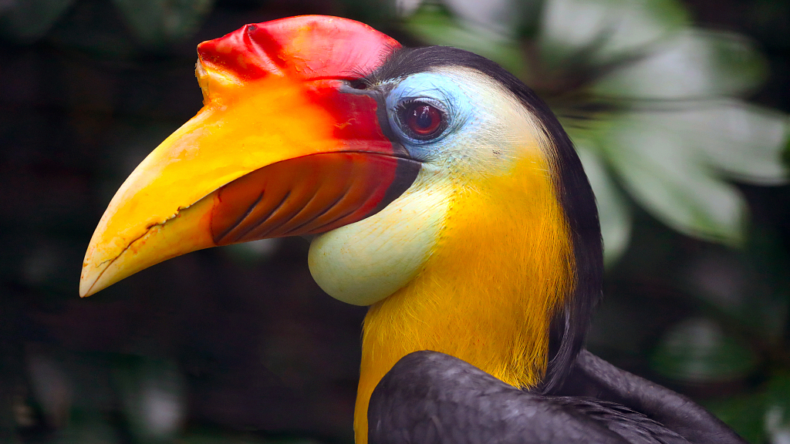
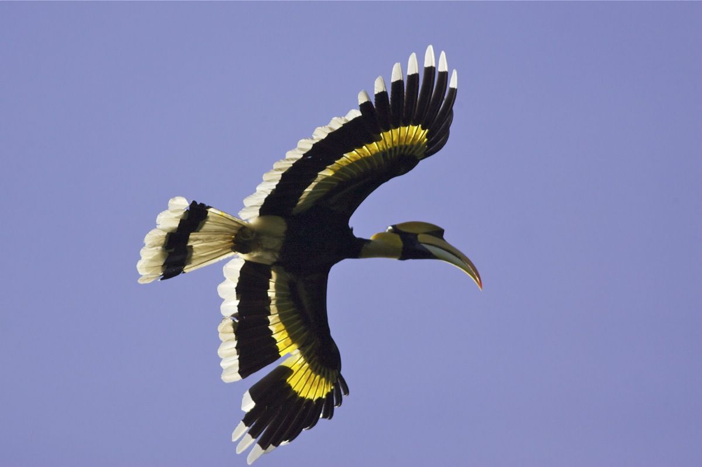
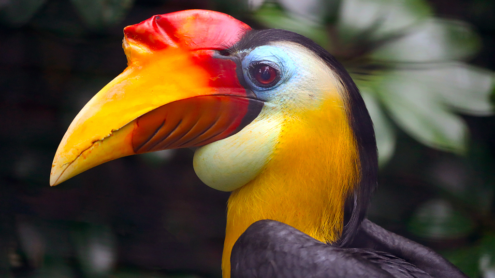
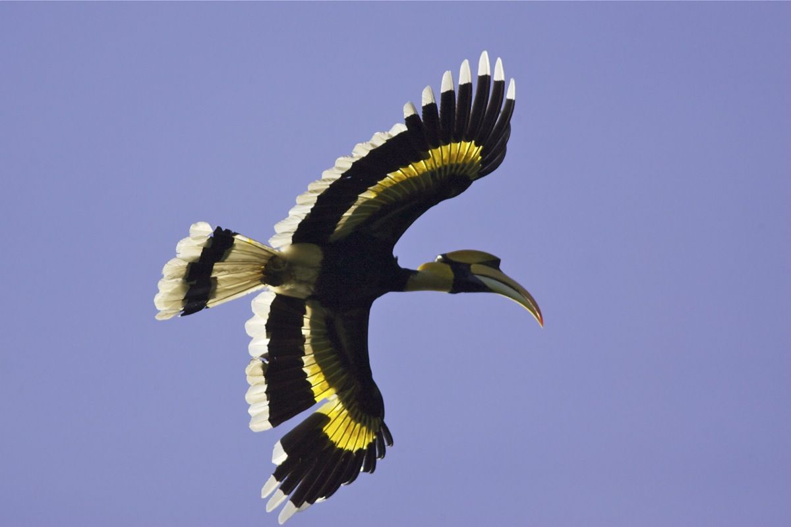

 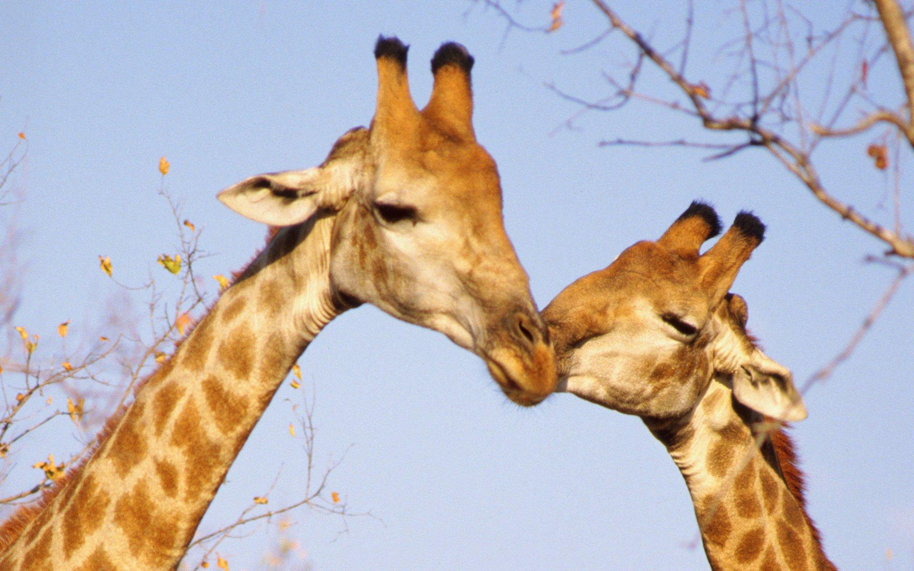
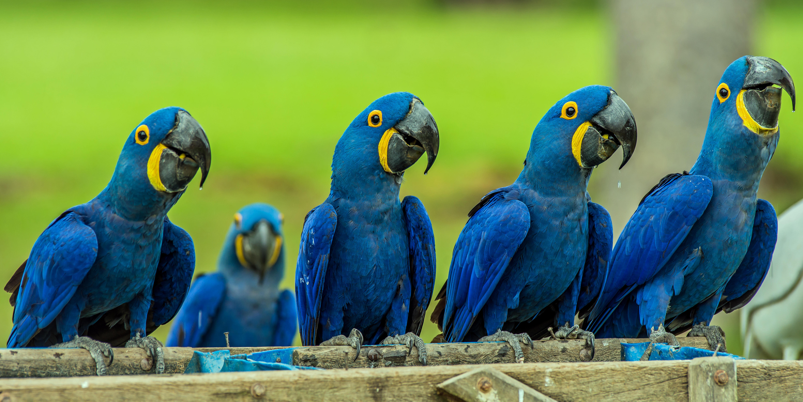
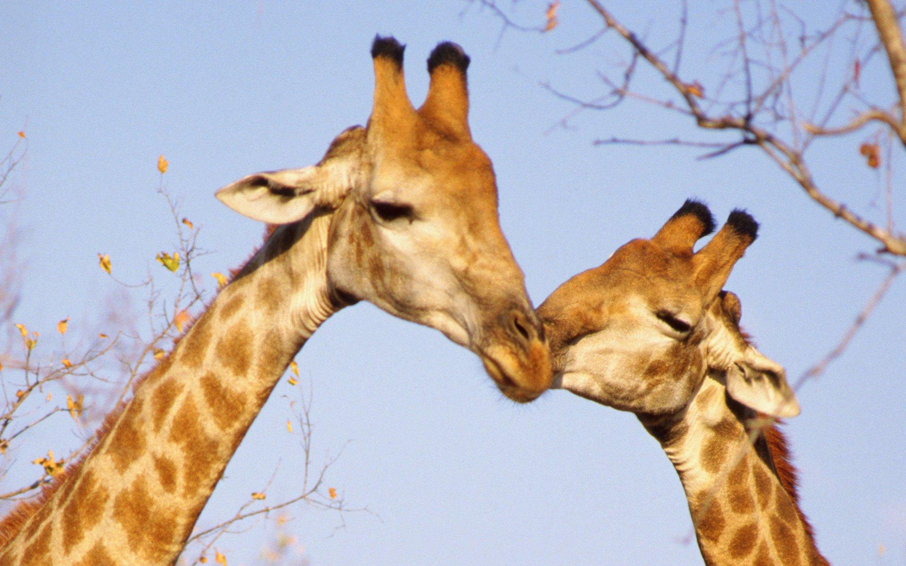
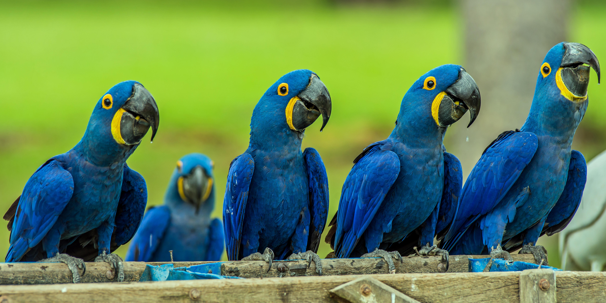